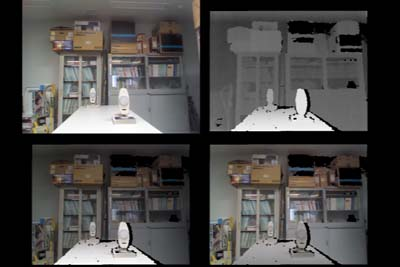

リサーチ
kinectを使った映像立体化や画像合成に関する研究
kinectは、もともとゲーム機（Xbox360）のコントローラーとして開発され、人物とその骨格を検出しジェスチャによってゲームを行うことを可能にしました。kinectには、カラー映像を取得できるカメラと対象までの距離を測定することができるIRカメラが搭載されており、映像処理の観点からみると、従来の２次元的映像を３次元映像として取り扱うことを可能とする映像入力装置ともいえます。研究室では、kinectを映像入力装置として活用し、立体映像の作成、映像合成などを可能とする手法を研究しています。図はDepth Fused 3D Display用の立体画像です。元写真（左上）、距離画像（右上）、前面ディスプレイ用画像（左下）、後面ディスプレイ用画像（右下）です。

DFD用立体画像の作成
左上：kinectカメラの画像
右上：距離画像。明るいほど手前
左下：前面画像。明るいほど手前
右下：後面画像。明るいほど奥